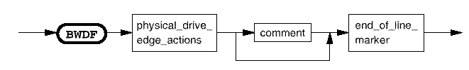

Break waveform
This section defines the edge actions for a break waveform. Only drive actions are allowed. No data dependent actions can be specified. Refer to the BWDF command in the Command Reference for more details.

This section defines the edge actions for a break waveform. Only drive actions are allowed. No data dependent actions can be specified. Refer to the BWDF command in the Command Reference for more details.
